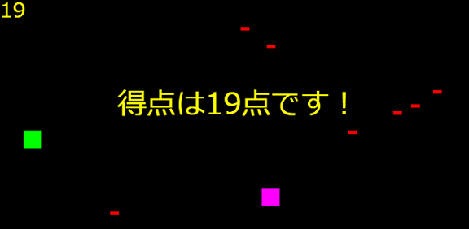
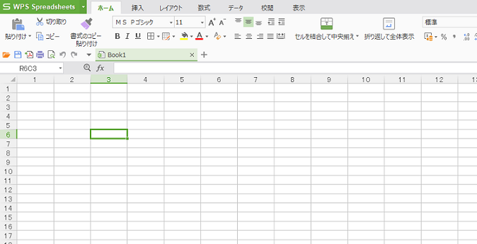
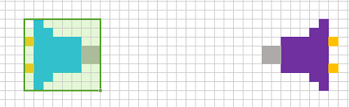
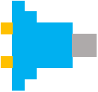
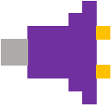
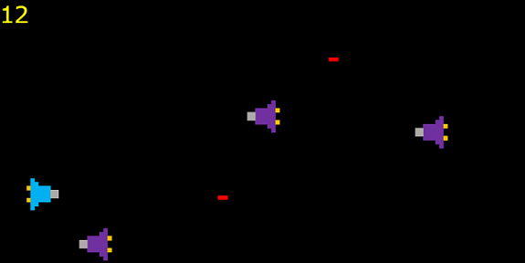

javascriptでシューティングゲームみたいなものを作る④
現在の進歩状況
記事
javascriptでシューティングゲームみたいなものを作る①javascriptでシューティングゲームみたいなものを作る②
javascriptでシューティングゲームみたいなものを作る③
javascriptでシューティングゲームみたいなものを作る④
今回のソースコード
見た目を修正
いきなりよくわかんないこと言われてもよくわかんないかもしれませんが（？）実はこれまでcanvasの大きさをstyleタグで決めてきてしまったのです。
これのデメリットは何かというとプレイヤーなどがぼやけるということです。いままでぼやけてたのもそのせいなのです。
著者の技術不足です。ごめんなさい。（（は？
さっきまでのstyleで指定するより、こっちのやりかたの方がはるかによくて推奨されるのでゲームを作るときはこっちにしてください。（えぇ
いきなりばーんとコードを貼ります。
すいません。
今回もgistで（index.htmlとmain.jsすべての変更）

どこを変更したかと言うと変数全般です。（適当）
canvasをでかくしたので、canvas内に描画するものも大きくしなければならないのです。
んで、このコードをコピペするとこんな感じにcanvasがぼやけなくなります。
なので、これでプレイヤーなどに画像を適用できるのです。やったね！
キャラクターに画像を適用する（エクセルでドット絵を描く）
ハイ、とうとうこのタイトル来ました。キャラクターに画像を適用していきたいと思います。まずは、ドット絵の書き方からやっていきたいと思います。
今回はExcelで描いていきたいと思います。Excelはmicrosoft excelじゃなくても大丈夫です。（ちなみに、ここではwpsを使っています）
まず、エクセルを開きます。

そして、縦の幅と横の幅を変えます。縦12で横1.5にしてください。
変えたら、上の部分から好きな色を選んでポチポチして行けばキャラクター的なものができます。
ここではあくまでもゲームを作ることが目的なので、ドット絵は深くやらないことにします。（えぇ
まぁこんな感じでドット絵を描けるよと言う紹介です。

これで設定をいじってグリッド線をなくして、windowsペイントにコピーしてpngファイルで保存します。
そうして背景を透明にしてindex.htmlがあるフォルダにコピペします。（完全に説明が適当）
png背景の透明化はこのサイトでできます。
https://www.peko-step.com/tool/alphachannel.html
で、今回使う画像を適当にここに貼っておくので、index.htmlがあるフォルダに置いてください。（丸投げ）
player

enemy

今から適用する（早くしろ）
タイトル通りです。それ以上でもそれ以下でもない（）
ちなみに、今のディレクトリの構造はこんな感じです。
|
├ndex.html
├main.js
├player.png
├enemy.png
はい、とりあえずソースコードです。（口癖:とりあえずソースコードです）
main.js21行目~
//playerを描く関数
function player_draw(){
var player_img = new Image()
player_img.src="./player.png"
ctx.drawImage(player_img,px,py,50,50)
}
これはただ単にplayer.pngを読み込んで表示させるだけのプログラムです。enemyの方も行きます。
main.js37行目~
function e_draw(){
for(var i = 0;i < ex.length;i++){
var enemy_img = new Image()
enemy_img.src = "./enemy.png"
ctx.drawImage(enemy_img,ex[i],ey[i],50,50)
}
}
とりあえずこんな感じ。一気にゲームっぽさが増したかもしれない（？）
今回のソースコード
これで一旦「javascriptでシューティングゲームみたいなものを作る」は終わりです。お疲れさまでした。
今後ともゲーム開発頑張ってください。
それでは
player.png
enemy.png